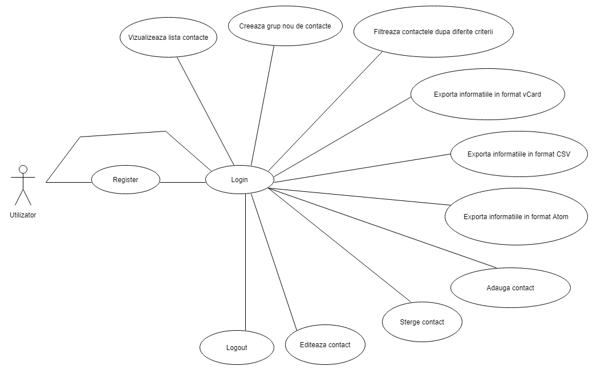
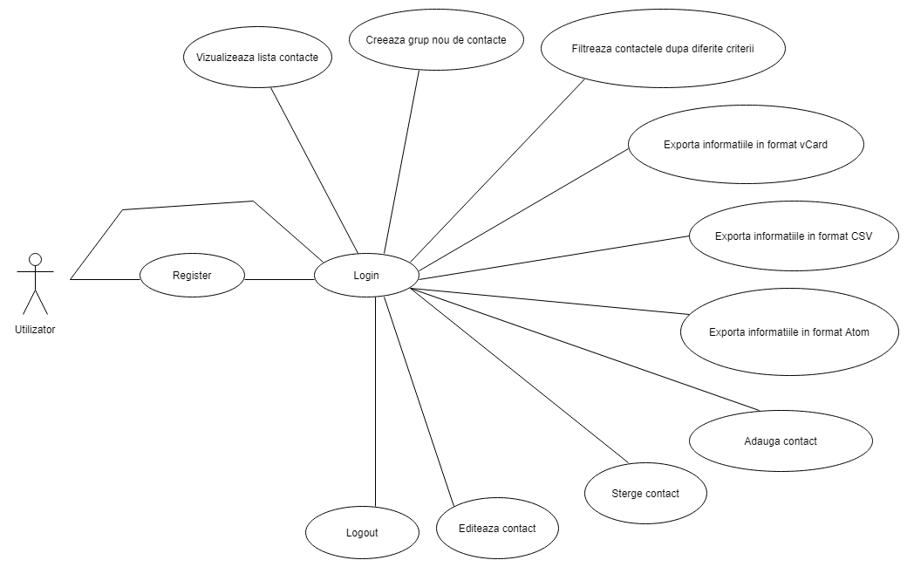

OnCo (Online Contacts)
Cuprins
1.Descriere
2.Tehnologii si limbaje utilizate
3.Diagrama aplicatiei + diagrama bazei de date + diagrama use case
4.Atributii
5.Retrospectiva
6.Bibliografie
1. Descriere
2. Tehnologii si limbaje utilizate
3. Diagrame
Diagrama Master:
Arhitectura bazei de date:
 Diagrama use case:

Diagrama use case:

4. Atributii
| Nume |
Task |
| Lungu Radu-Ionut |
BD + Front end + Back end (login/logout, register, adauga contact, exporturi, validari) |
| Daniela Simiganoschi |
BD + Front end + Back end (sterge contact, editeaza contact, filtreaza contacte, apel ajax) |
5. Retrospectiva
| Nume |
Stare |
Likes |
Dislikes |
| Lungu Radu-Ionut |
★ ★ ★ ★ ☆ |
lucrul in echipa; lucruri noi, interesante; |
mai multa coordonare intre membrii echipei; |
| Simiganoschi Daniela |
★ ★ ★ ★ ☆ |
limbaje noi de programare; colaborare; |
nopti nedormite; organizarea proasta a timpului; |
6. Bibliografie
-
Bellacera
Jake
.
PHP to ICS.
GitHub.
-
Saini
R.
K. ,
shubham
715. ,
White
Hat
.
Intrebari in legatura cu JSON si $ajax.
StackOverflow.
-
Imagini cu drept de reutilizare.
PixAbay.
-
Imagini cu drept de reutilizare.
Google images.